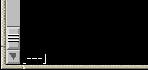
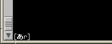

cosmoはユーザ登録を要望があった際にのみ行なってますので、
利用されたい方はまずユーザ登録グループ(admin@nile.ulis.ac.jp)まで連絡を下さい。
アカウントを作成します。
最終更新日： Tue Jan 11 14:42:28 2000
ユーザ・マニュアル
目次
- パスワード変更について
% passwd
とすると、今まで使っていたパスワードを入力し、新しいパスワードを2回入力するとパスワードの変更が行なわれます。
注意:以前は、nileと同一のパスワードを使えるようにしていましたが、現在、cosmoのパスワードは他のマシンと共有されていません。(1999-09-19)
- どの端末で使えるか。（GUI環境）
- cosmoのコンソール
- 研究棟のX-端末
一番したの「Host nameと出ているところに、cosmoと打ち込む。
- leto, artemis（2講部屋にあるSolaris2.6のマシン）
「オプション」→「リモートログイン」→「ホスト名を入力…」として、出てきたウィンドウに、cosmoと打ち込む。
- fuujin, raijin, felipe2（2講部屋にあるAstec-Xの入っているPC）
Astec-Xを利用して下さい。
- UNIX シェルの出し方
コマンドを打つ際には、端末エミューレータを起動する必要があります。
下のように、画面の左上にあるToolchestから「デスクトップ」→「UNIXシェル」と選択すると、起動できます。
- 日本語入力について
Wnn6が使えます。


まず、使いたいウィンドウ上で左下に上のような表示があれば、日本語入力が行なえます。
日本語が打ちたい時は、「Control」キーと「\」（バックスラッシュキー）を同時に押すと、日本語変換モードになります。
変換には「スペースキー」を使って下さい。
文節の伸縮は、伸び：「Control」＋「o」（Controlキーとoを一緒に押す）、縮み：「Control」＋「i」（Controlキーとiを一緒に押す）でできます。
- Netscapeの起動方法
WWWブラウザは標準でnetscape（Version 3.01ja SGIバージョン）が動作します。
右のようにToolchestから、「インターネット」→「Web ブラウザ」と選択すると、起動します。
- 印刷する
% lp -d printer名 filename
として下さい。（lpr コマンドは使えません）
プリンタ名を指定せずに
% lp filename
とすると、2koups に出力されます。
他に利用できるプリンタは、600ps, kiki , ipcps2 , msctp , mmctp, mgctp, 1040ps です。これ以外のプリンタへは、rsh などで他のマシンを通して下さい。
% cat ファイル名 | rsh 他のマシン名 lp -d 利用したいプリンタ名
※日本語テキストファイルの出力は、文字化けしますので、a2psコマンドを通して下さい。(% a2ps ファイル名 | lp )
- 文章を書く（エディタ）
- vi
- UNIX 標準のスクリーンエディタです。
- mule
- GNU Emacs の多言語対応エディタです。
- その他：jot 及び nedit
- デフォルトでついてきた GUI のテキストエディタです。（筆者は使ってみたことがないので、良く分かりません…）
- プログラミングする
- C言語
- Cコンパイラはccコマンド（OS付属）とgccコマンド（フリーソフト）の2種類があります。
- Perl
- perlコマンド（version 5.004_04 Japanization patch 4）が入っています。
- LaTeXする
筆者のレポート作成・論文執筆用にLaTeXの環境を一応使えるようにしてあります。私はjlatexコマンド、dvi2psコマンドでTeXのコンパイルをしています。
江草さんがMy LaTeX tipsでこのLaTeXの使い方をまとめてくれたので、細かい使い方はそっちを見て下さい。
ここに記載してある内容での不明な点もしくは記載されていないこと、
「あれが動かない」、「このコマンドはどこ?」というような文句は
気軽に私まで言って下さい。
できる範囲でお答えします。
また、(オンライン)マニュアルやヘルプも参考にしてみて下さい。
さらに、自力でも解決を図れるように、
フリーソフトなどのインストールメモや
管理作業のメモも残しています。
よければ、参考にしてみて下さい。
（cosmoの情報）
高久雅生 (Takaku Masao)
masao@ulis.ac.jp